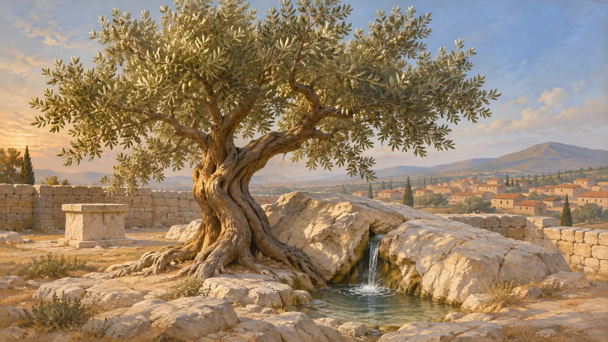
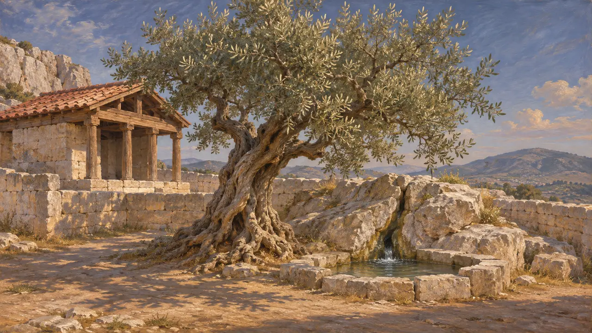
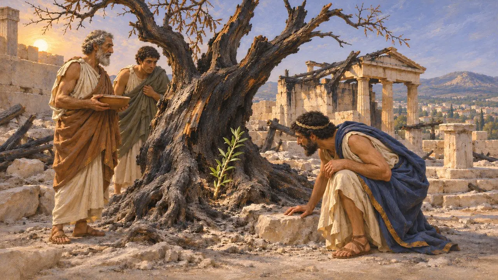
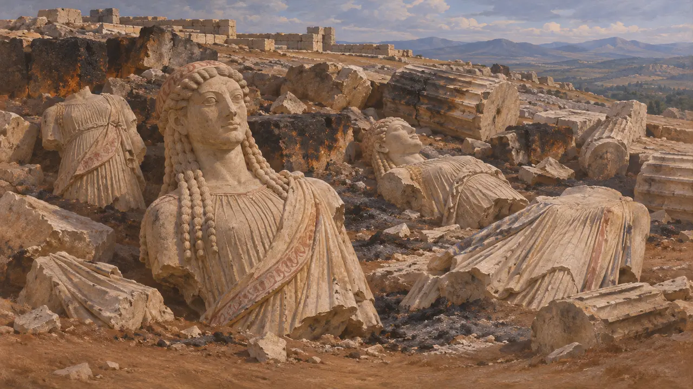
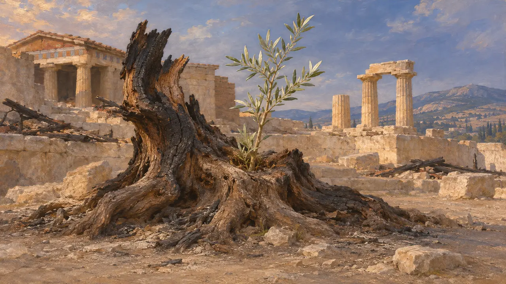

L'Olivier d'Athéna
Olivier sacré de l'Acropole d'Athènes, brûlé par les Perses en 480 av. J.-C.
L'Olivier d'Athéna était l'olivier sacré de l'Acropole d'Athènes, que la déesse elle-même, selon les Athéniens, avait fait pousser là. Hérodote rapporte qu'il brûla lorsque l'armée de Xerxès saccagea l'Acropole en 480, et que le lendemain une nouvelle pousse avait jailli de la souche. Les Athéniens racontaient sans doute cette histoire comme le signe que leur cité survivrait à l'invasion.
Dans le jeu : L'olivier figure sur la carte d'un niveau en tant qu'élément historique et n'est pas construit par le joueur. Le jeu le place près de l'ancien temple. Hérodote le situe dans le sanctuaire d'Érechthée : l'emplacement retenu par le jeu est donc une simplification.

Le don de la déesse
Légende tardiveLes Athéniens racontaient qu'Athéna et Poséidon s'étaient jadis disputé leur terre : Poséidon frappa le rocher et en fit jaillir une source d'eau salée, et Athéna fit pousser un olivier. La terre fut attribuée à Athéna. Hérodote ne mentionne l'olivier et la source salée que comme les témoins de cette rivalité. Les versions plus complètes du mythe proviennent d'auteurs bien plus tardifs, comme Apollodore.
Herodotus 8.55; Apollodorus, Library 3.14.1

Dans le sanctuaire d'Érechthée
Récit antiqueHérodote situe l'olivier dans le temple d'Érechthée, roi des premiers temps d'Athènes né de la terre, avec la source d'eau salée. Des auteurs anciens plus tardifs et les chercheurs modernes placent l'arbre dans le Pandroseion, l'enceinte à ciel ouvert de Pandrose, à l'ouest du futur Érechthéion. Pausanias, décrivant l'Acropole au IIe siècle apr. J.-C., connaissait encore l'olivier et répétait qu'il était la preuve donnée par la déesse lors du concours.
Herodotus 8.55; Pausanias 1.27.2

Brûlé, puis bourgeonnant de nouveau
Récit antiqueEn 480, les Perses gravirent l'Acropole, tuèrent ses derniers défenseurs et incendièrent le sanctuaire. Hérodote raconte que le lendemain, Xerxès ordonna aux exilés athéniens de sa suite d'y monter et de sacrifier selon leurs propres rites, peut-être à la suite d'un songe ou par regret de l'incendie. Les exilés constatèrent qu'une pousse d'environ une coudée, soit à peu près un demi-mètre, avait jailli de l'olivier brûlé.
Herodotus 8.53-55

Traces du sac
Dans les sourcesLes fouilles menées sur l'Acropole dans les années 1880 ont mis au jour des débris de la destruction perse : pierres de construction calcinées et statues de marbre brisées, parmi lesquelles de nombreuses korai, enfouies lorsque les Athéniens déblayèrent et nivelèrent plus tard la colline. L'arbre sacré lui-même n'a laissé aucun vestige identifiable. L'olivier qui pousse aujourd'hui à cet endroit est une plantation moderne.
J. Hurwit, The Athenian Acropolis, 1999

Comment le récit s'est enrichi
ContestéPausanias, qui écrit quelque six siècles plus tard, rapporte une tradition selon laquelle l'olivier repoussa le jour même de l'incendie et atteignit deux coudées. Hérodote parle d'une coudée, le lendemain. Les historiens notent que les oliviers repartent souvent de leurs souches brûlées, si bien que la repousse pourrait être réelle. Beaucoup y voient aussi une tradition athénienne façonnée en présage de la survie de la cité.
Herodotus 8.55; Pausanias 1.27.2
Sources
- Herodotus 8.53-55
- Pausanias 1.27.2
- Apollodorus, Library 3.14.1
- J. Hurwit, The Athenian Acropolis, 1999